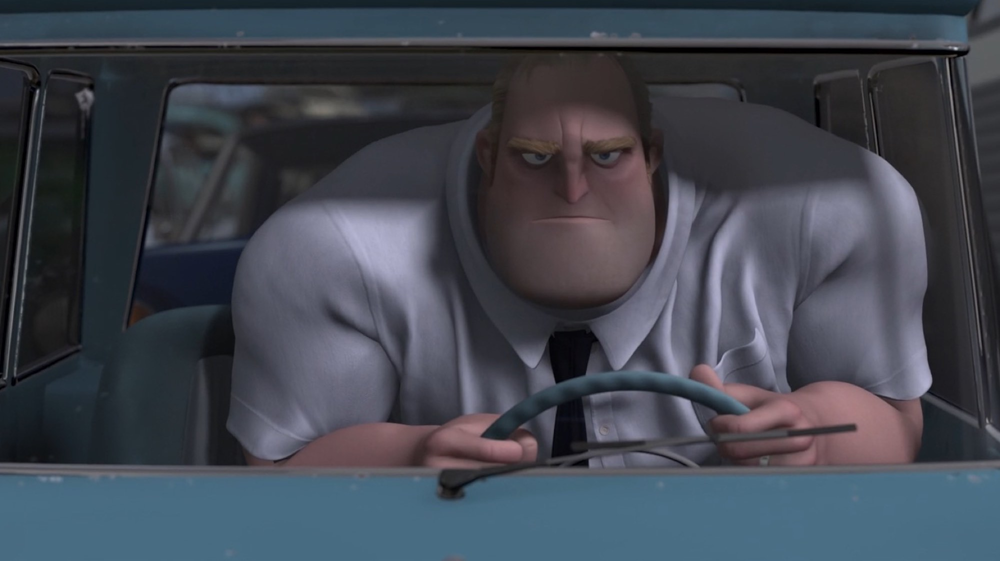
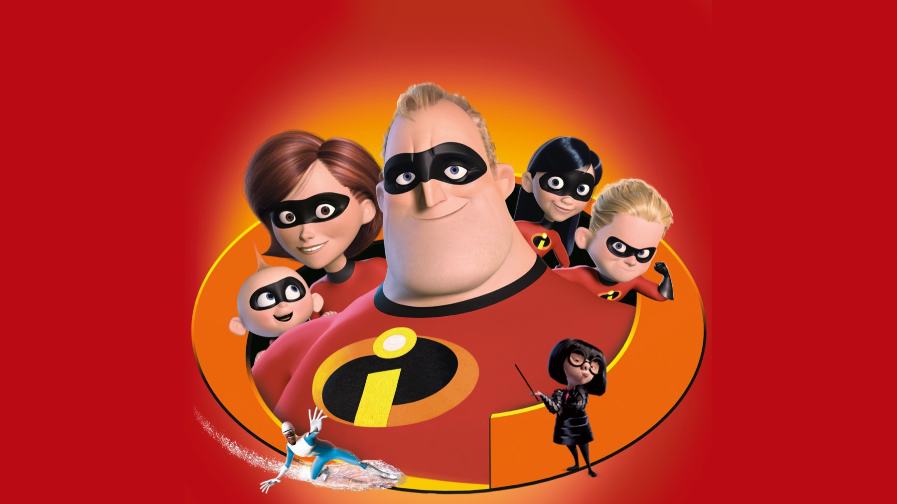
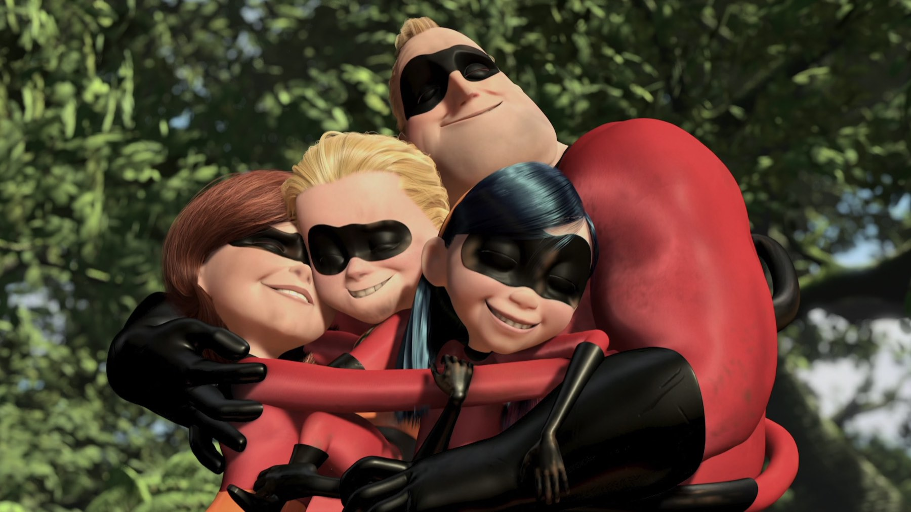

Dietro Edna Mode c'è un software, non Edith Head
Un tweet che smentisce Edith Head, un nome rubato a un software e una voce che nessuna attrice sapeva rifare
Edna Mode misura Bob con uno sguardo, rifiuta di disegnargli un mantello e liquida l'argomento con una frase da sentenza. Dura pochi minuti, eppure è la scena che molti ricordano de Gli Incredibili. Ma da dove arriva questa stilista minuscola, con il caschetto nero e gli occhiali enormi? Le risposte sono meno ovvie di quanto si creda, e partono da un'idea nata undici anni prima del film.
Una famiglia disegnata nel 1993
Brad Bird disegnò i Parr nel 1993, mentre lavorava con Turner Feature Animation, studio poi assorbito da Warner Bros. Feature Animation. Lì stava dirigendo The Iron Giant, che al botteghino andò male nel 1999. Così Bird riprese l'idea e nel marzo 2000 chiamò John Lasseter alla Pixar: il contratto fu annunciato il 4 maggio dello stesso anno. Il film uscì negli Stati Uniti il 5 novembre 2004 e incassò circa 632 milioni di dollari nel mondo. Il dato conta perché Edna appartiene a un progetto lungo, firmato da una persona sola sia alla regia sia alla sceneggiatura, cosa rara in Pixar, e con i primi personaggi tutti umani dello studio.
Una stilista che nessuna attrice sapeva fare
In originale Edna ha la voce di Bird stesso. Furono considerate diverse attrici, ma nessuna riuscì a rifare l'accento che il regista aveva in mente. Lily Tomlin rifiutò, perché pensava di non poter rendere il personaggio divertente come lui. Poi un'attrice che Bird stimava chiese una registrazione per esercitarsi e, dopo averla provata, gli disse che lo faceva bene e che avrebbe dovuto farlo lui. Bird ha scherzato spesso sull'episodio, dicendo di essere stato scelto perché costava poco ed era sempre disponibile. Rivista oggi, la scena funziona anche per questo: Edna parla come una persona che non ha mai chiesto il permesso a nessuno.
Da dove viene davvero Edna Mode
La risposta più diffusa è Edith Head, la costumista di Hollywood. Bird però la smentì in un tweet del 2013, e citò Head insieme a Patricia Highsmith e all'attrice Linda Hunt, aggiungendo di aver mescolato la costumista con Q, l'inventore dei film di James Bond. Il co-creatore Teddy Newton si ispirò invece al documentario Unzipped, del 1995. Il nome, infine, non ha niente di francese: viene da EMode, un software Pixar. Per noi l'origine mista è il segreto del personaggio, perché non somiglia a nessuno in particolare, quindi ognuno ci riconosce un pezzo di moda diverso.

Niente mantelli: la regola e i suoi morti
La battuta più citata è anche una regola di sicurezza. Edna elenca supereroi morti per colpa del mantello: Dynaguy, Thunderhead, Stratogale, Meta-Man, Splashdown. In più ricorda un altro eroe, risucchiato da una turbina a reazione. Il film lo racconta come una gag, ma la gag ha una conseguenza vera: alla fine la morte di Syndrome conferma la sua tesi. Edna non vince la scena con un'opinione sulla moda, la vince con un elenco di prove, e per questo regge anche a una seconda visione.
La voce italiana è di Amanda Lear
In italiano Edna è Amanda Lear, ed è stato il primo personaggio che Lear abbia doppiato nella nostra lingua. Nelle versioni italiana e francese l'accento di Bird lascia il posto a un'interpretazione più pungente. Non è la stessa Edna, però è altrettanto riconoscibile, perciò se la rivedete su Disney+ con il doppiaggio italiano, ascoltate come la voce faccia da sola metà della battuta sui mantelli.

Dal 2004 a Gli Incredibili 2
Il film vinse due Oscar alla 77ª cerimonia, per il miglior film d'animazione e per il miglior montaggio sonoro. Edna tornò nel 2018 in Gli Incredibili 2, dove fa la babysitter a Jack-Jack: un ruolo da protagonista per un personaggio nato per una sola scena. Se volete altri retroscena su film che avete già visto, leggete anche Men in Black, sul ruolo che andò a Will Smith, e Pirati dei Caraibi, sul pirata nato da un chitarrista.
Edna Mode funziona perché nessuno sa da chi derivi, e Bird ha preferito così: rivedendo Gli Incredibili su Disney+ osservate quanto della scena è voce e quanto è disegno. Quale parte della scena dei mantelli ricordavate meglio?
Domande frequenti
Chi doppia Edna Mode?
In originale Brad Bird, il regista del film; in italiano Amanda Lear.
Edna Mode è ispirata a Edith Head?
È l'ipotesi più diffusa, ma Bird la smentì in un tweet del 2013 e citò anche Patricia Highsmith e Linda Hunt.
Perché Edna non vuole i mantelli?
Nel film ricorda supereroi morti proprio per colpa del mantello, tra cui Dynaguy e Splashdown.
Dove si vede Gli Incredibili in Italia?
Su Disney+, con abbonamento.